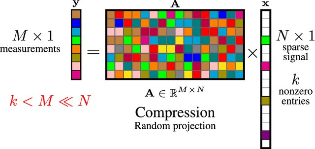
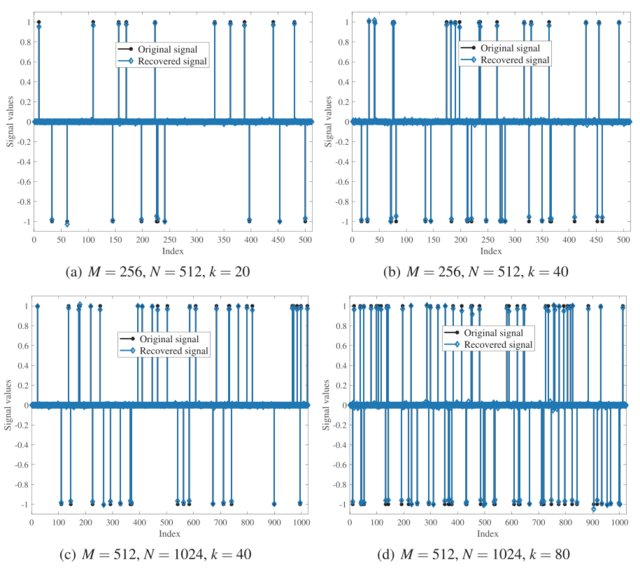

Research
Monotone inclusions
|  |
|  |
Projects
求解单调包含问题的加速算法研究，重庆市自然科学基金面上项目，立项编号：CSTB2024NSCQ-MSX0354，执行时间：2024.7.1–2027.6.30，主持，10万元
均衡问题的算法设计与应用研究，中央高校基本科研业务费，立项编号：SWU-KQ24052，执行时间：2024.5.1-2027.4.30，主持，20万元
Conference
Dec. 2024. 重庆运筹学会年会，重庆.
Oct. 2024. 中国运筹学会第十七届年会，贵州贵阳.
May 2023. 非线性分析国际会议暨第二十二届全国非线性泛函分析会议，贵州贵阳，中国. PS：热烈庆祝张石生先生90岁生日快乐.
Jun. 2022. 2022 West Coast Optimization Meeting (WCOM)，UBC Okanagan，加拿大.
Jul. 2021. 第八届现代分析数学及其应用国际学术会议，甘肃兰州，中国.
Oct. 2020. 中国运筹学会第十一次全国会员代表大会暨第十五次学术交流会，安徽合肥，中国.
Jun. 2019. 电子科技大学基础与前沿研究院五周年院士高峰论坛，四川成都，中国.
Apr. 2019. 中国运筹学会第十二届全国数学优化会议，江苏南京，中国.
Academic events
2024.9. 汕头大学数学系作报告. Link
Organizer–Xiaolong Qin
| Date | Speaker | Title | Location | Info |
| Jun 2019 | Haiyun Zhou | Variational inequality problem | Chengdu, CN | |
| May 2019 | Xianfu Wang | A parameterized Douglas–Rachford algorithm | Chengdu, CN | |
| Mar 2019 | Markus A. Kobis | A note on separation approaches to set–valued optimization problems | Chengdu, CN |
 Speaker: Haiyun Zhou |
 Speaker: Xianfu Wang |
 Speaker: Markus A. Kobis |
Codes
An explicit extragradient algorithm for equilibrium problems on Hadamard manifolds. Fan2020EGM4EPonHM
Strong convergence of two inertial projection algorithms in Hilbert spaces. Tan2020iSPs4MVIP-HFPP
MATLAB Toolbox
vipsegm. Numerical solution for pseudomonotone variational inequality problems by extragradient methods.
Manopt. With Manopt, you can solve optimization problems on manifolds using state-of-the-art algorithms, with minimal effort.
SGDLibrary. MATLAB/Octave library for stochastic optimization algorithms.
FOM, is a MATLAB toolbox containing a collection of first order methods for solving (mainly) convex optimization problems.
CVX: Matlab Software for Disciplined Convex Programming.
TFOCS: Templates for First-Order Conic Solvers. Introduction
NESTA: Nesterov's Algorithm. A Fast and Accurate First-order Method for Sparse Recovery.
UNLocBoX: Matlab convex optimization toolbox.
YALMIP: MATLAB toolbox for optimization modeling.
PN2O: Parallel Algorithms and Numerical Nonlinear Optimization,
l1benchmark: Fast \(\ell_1\) Minimization Algorithms.
FASTA. Fast Adaptive Shrinkage/Thresholding Algorithm.
Toolbox Sparse Optmization: Optimization codes for sparsity related signal processing.
Visitor Stats.